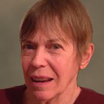

Let us live simply in the freshness of the present moment, in the clarity of pure awakened mind
-Matthieu Ricard
Teachers
Glenda Hodges-Cook has practiced vipassana meditation since 1976, studying with such teachers as Sharon Salzberg, Joseph Goldstein, Jack Kornfield, John Travis, and Donald Rothberg. She completed the 2 ½-year Community Dharma Leader Program at Spirit Rock Meditation Center, Woodacre, California. She taught community mental health nursing and holistic health at Indiana University Southeast and also led meditation and t'ai chi groups at the Luther Luckett Correctional Complex in La Grange. Currently, along with LVC, Glenda is on the faculty of the Passionist Earth and Spirit Center.

Phil Lloyd-Sidle has been studying the dharma for 15 years beginning with a retreat at Vallecitos, New Mexico. He was a student in the Community Dharma Program at Spirit Rock before it was unfortunately cancelled in the spring of 2020 due to COVID. He has led semi-annual retreats with Glenda at Loretto, taught with others at the Louisville Metro Jail. Phil is a retired Methodist and Presbyterian pastor having served congregations in Uruguay (South America), Philadelphia, and Louisville at James Lees Memorial Presbyterian. He also worked for 4 years with the Center for Women and Families.